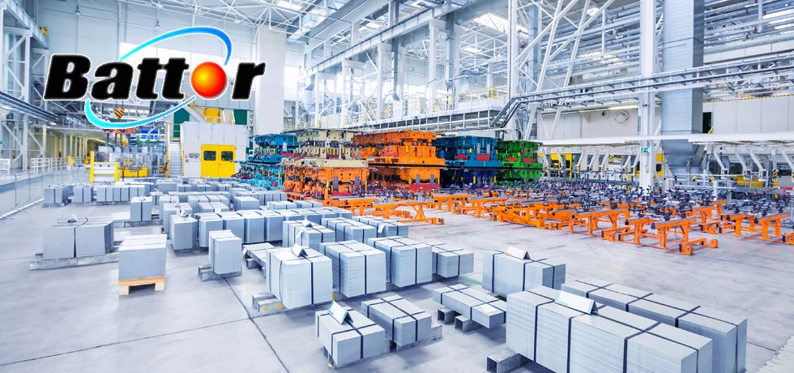

BattorMetalworking & Machinery Oils
Hydraulic, spindle, slideway, gear, air compressor, heat transfer, EDM, quenching and other industrial oils, chosen to suit your machines and operating conditions.
Thanks to the industry's support, Yuan Hua has been tempered by more than 40 years of supplying cutting oils, cutting fluids and metalworking & machinery oils of every kind. These years have taught us humility and gratitude, and we will keep working tirelessly to become the company you trust most.
Yuan Hua Oil was founded in 1977 as Yongtai Mineral Oil Co. and has been in business for more than 36 years. Guided by professionalism, service and integrity, we give customers sound, accurate knowledge of metalworking and machinery oils. Over the years Yuan Hua has earned the industry's recognition and become the exclusive distributor of metalworking oils from SAN-I Yushiro Chemical Industry Co., Ltd. of Japan, bringing customers the latest technology and quality products. Beyond our core metalworking business, we have also set up a new division to distribute IP lubricants from one of Italy's largest lubricant companies and SRS automotive engine oils from Germany's largest engine oil manufacturer, diversifying to meet the market's varied needs.
Battor-brand metalworking & machinery oils:

Battor Series
- 01

Energy-Saving Hydraulic Oil
Double hydrotreated, with an ultra-high viscosity index and a friction modifier. Resists high temperatures and wear, and prevents seal stick-slip, sticky deposits and corrosion. For machinery operating under extreme temperature swings…
View product details → - 02HIVIS AW HLPSO:32-680
Anti-Wear Hydraulic Oil
Anti-Wear Hydraulic Oil combines anti-wear performance, demulsibility and thermal stability with excellent rust and corrosion protection, and does not harm seals. Suitable for high- and low-pressure hydraulic systems and for gear and bearing lubrication in industrial equipment and heavy vehicles. Meets the high-performance requirements of DIN…
View product details → - 03HIVIS Fluid DU Series
Fire-Resistant Hydraulic Oil
A fire-resistant hydraulic fluid with high chemical stability and excellent corrosion resistance and lubricity, maintaining stable operation even under high shear and high pressure. FC is a water-glycol type; DU is a synthetic fire-resistant hydraulic oil…
View product details → - 04HIVIS HV ISO:5 10 22
High-Speed Spindle Oil
For lubricating high-speed spindles, especially in high-speed machine tools and textile machinery. Offers excellent oxidation stability, prevents sticky deposits and discoloration, provides good rust prevention and water resistance, and does not attack oil seals. Meets the specifications required by precision spindle manufacturers SKF and LANDIS…
View product details → - 05SIDEWAY BW ISO:32 68 220
Slideway Oil
This slideway oil offers good oil-water separation and leaves no sticky deposits on slideways. It is especially suited to the vertical and horizontal slideways of precision machine tools, to anti-wear bearing lubrication and to machine tool gearboxes. WAY is reinforced for extra-heavy loads…
View product details → - 06ISO: 32-680
Gear Oil
Lead-free extreme pressure (EP) gear oil that resists water, foam, wear and corrosion and markedly reduces friction and noise. Suitable for reduction gears, heavy-duty gears, general thrust ball bearings and similar applications, and for industrial gears running at oil temperatures above 100 °C…
View product details → - 07GIREX SW NG ISO: 32-680
Air Compressor Oil
Lead-free extreme pressure (EP) gear oil that resists water, foam, wear and corrosion and markedly reduces friction and noise. Suitable for reduction gears, heavy-duty gears, general thrust ball bearings and similar applications, and for industrial gears running at oil temperatures above 100 °C…
View product details → - 08HEAT BRANFER ISO: 32 46 68
Heat Transfer Oil
Formulated from high-viscosity-index paraffinic base oil, with excellent thermal stability, for closed circulation systems equipped with an expansion tank. S is a synthetic type for temperatures up to 370 °C.
View product details → - 09Refigerator KM SP Series
Refrigeration Oil
Refrigeration compressor oil made from select naphthenic base oil; SP is a synthetic type. Chemically stable and wax-free, it is compatible with common refrigerants and ammonia, forms no wax even at low operating temperatures and does not clog refrigeration systems. Meets DIN…
View product details → - 10EMD Fluid E.S Series
EDM Oil
A low-viscosity, highly refined, colorless and clear EDM oil with a hydrocarbon base oil and high oxidation stability. Free of aromatic hydrocarbons, it is odorless and gentle on skin, with ultra-low electrode wear and excellent flushing performance. S is a synthetic type that never…
View product details → - 11Quench oils X.Y.Z Series
High-Temperature Quenching Oil
Delivers maximum hardness and minimal distortion in high-speed quenching. Its high flash point and low viscosity reduce the amount of oil carried off with workpieces. Special additives give it a long service life even at bath temperatures of X: 40–95 °C, Y…
View product details → - 12Moly GREASE EP-2
Molybdenum Disulfide Grease
A uniquely effective shock-resistant grease with excellent anti-wear properties, providing optimal wear protection for machinery and construction equipment.
View product details →
Facing a shop-floor problemand not sure where to start?
- Not sure which oil to use?
- Dealing with short cutting fluid life, odor, rust or wastewater issues?
Tell us about your current machining conditions and how things are running, and the Yuan Hua team will help clarify your needs and evaluate the right products and services.
Yuan Hua Oil Co., Ltd.
- Tel
- 04-2335-5559
- Fax
- 04-2335-8886
- Hours
- Mon–Fri 08:00 – 17:00